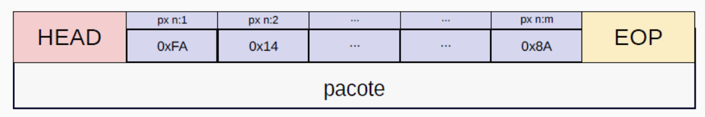

Introdução à Comunicação por Datagramas
Normalmente, a camada responsável pela transmissão dos dados gerados em camadas superiores realiza a transmissão de duas formas: dados fragmentados em pacotes (datagramas) ou streaming. As principais diferenças entre uma transmissão em streaming e uma transmissão baseada em pacotes (datagramas) estão relacionadas à forma como os dados são enviados, recebidos e processados. Vamos analisar cada uma:
Transmissão em Streaming
- Definição: É uma forma de transmissão contínua de dados, geralmente usada para conteúdos multimídia (áudio e vídeo).
- Protocolo comum: Utiliza protocolos como RTP (Real-time Transport Protocol) sobre UDP ou HLS/DASH sobre HTTP.
- Modo de entrega: Os dados são entregues e processados continuamente, permitindo a reprodução do conteúdo quase em tempo real, sem necessidade de download completo.
- Latência: Baixa a moderada, dependendo da técnica utilizada (por exemplo, buffering para evitar interrupções).
- Controle de erro: Pode tolerar pequenas perdas sem comprometer significativamente a experiência do usuário.
- Exemplos de uso: Plataformas como Netflix, YouTube, Spotify e transmissões ao vivo.
Transmissão em Pacotes (Datagramas)
- Definição: Baseia-se no envio de pacotes de dados independentes, onde cada datagrama pode seguir um caminho diferente na rede.
- Exemplos: Protocolos como UDP (User Datagram Protocol), que não garante a entrega ou a ordem dos pacotes. E protocolos como o TCP (Transmission Control Protocol), que provê garantia de entrega.
- Modo de entrega: Os pacotes são enviados de forma discreta, sem garantir que chegarão na mesma ordem ou mesmo que serão entregues (dependendo do protocolo).
- Latência: Aumenta quando há necessidade de confirmação de recebimento de pacotes, como no TCP.
- Controle de erro: Garantia de retransmissão no caso do TCP.
- Exemplos de uso: Aplicações em tempo real como VoIP (ligações pela internet), jogos online, DNS, transmissões multicast.
Diferenças entre Streaming e Datagramas 1
Resposta!
A transmissão em streaming permite a reprodução do conteúdo quase em tempo real sem necessidade de download completo, diferentemente da transmissão por datagramas que envia pacotes independentes.
Como são os pacotes (datagramas)
Um datagrama é tipicamente dividido em 3 partes:
- Um cabeçalho (header)
- Payload (dados)
- EOP (end of package)

Nos bytes reservados ao cabeçalho são colocados os bytes de comunicação entre as partes. O metadado. Com os bytes posicionados nas posições corretas, as partes podem conversar. Confirmar envio, informar quem está enviando, qual o número do pacote, qual o tamanho do payload, confirmar recebimento... Enfim, esses bytes são utilizados para uma conversa entre as partes.
No payload são colocados os bytes de dados que foram acomodados no pacote.
O EOP é uma espécie de fim de pacote, é uma sequência combinada que marca o fim do pacote.
Estrutura do Datagrama 2
Resposta!
O cabeçalho contém metadados essenciais para a comunicação entre as partes, como informações de controle, endereçamento, numeração de pacotes e confirmações.
Por que enviar os dados segmentados em pacotes?
Os principais motivos para o uso de transmissão em pacotes são:
1. Eficiência na utilização da rede
- Dividir dados em pacotes permite que várias transmissões ocorram simultaneamente na rede.
- Diferentes pacotes podem seguir rotas distintas para evitar congestionamentos.
- Se um pacote for perdido, somente ele será retransmitido, e não toda a mensagem.
2. Melhor controle de erro
- Cada pacote contém um checksum para verificar a integridade dos dados.
- Se houver erro na transmissão, apenas o pacote corrompido será reenviado, reduzindo desperdício de banda.
3. Gerenciamento de tráfego e controle de congestionamento
- Protocolos como TCP ajustam o tamanho dos pacotes e a taxa de envio conforme a capacidade da rede.
- Se a rede estiver congestionada, pacotes podem ser redirecionados ou retransmitidos.
4. Fragmentação e reassemblagem
- Pacotes menores são mais fáceis de transportar e evitam bloqueios em redes de diferentes capacidades.
- Dispositivos intermediários, como roteadores, podem fragmentar ou juntar pacotes conforme necessário.
5. Comunicação mais robusta e confiável
- Se uma conexão for interrompida, pacotes já transmitidos não são perdidos.
- A comunicação pode ser mantida mesmo com falhas parciais na rede.
Vantagens da Segmentação 3
Resposta!
Uma das principais vantagens da segmentação é que, em caso de erro, apenas o pacote corrompido precisa ser retransmitido, não toda a mensagem, economizando banda e tempo.
Exemplo de datagrama: Cabeçalho TCP
Exemplo de datagrama: Cabeçalho TCP (20 bytes fixos + opções variáveis)
| Campo | Tamanho (bits) | Descrição |
|---|---|---|
| Porta de origem | 16 | Número da porta do remetente |
| Porta de destino | 16 | Número da porta do destinatário |
| Número de sequência | 32 | Indica a posição do primeiro byte deste segmento dentro do fluxo de dados |
| Número de confirmação (ACK) | 32 | Confirma o recebimento do último segmento válido do emissor |
| Tamanho do cabeçalho | 4 | Indica o tamanho do cabeçalho TCP (mínimo 20 bytes) |
| Reservado | 3 | Reservado para uso futuro |
| Flags de controle | 9 | Indica o estado da conexão (SYN, ACK, FIN, etc.) |
| Tamanho da janela | 16 | Quantidade de bytes que o receptor pode aceitar sem receber confirmação |
| Checksum | 16 | Verifica a integridade do segmento |
| Ponteiro de urgência | 16 | Indica se há dados urgentes (caso a flag URG esteja ativa) |
| Opções TCP | Variável | Usado para configurações extras, como escala de janela, timestamps, etc. |
Além do cabeçalho, o protocolo TCP possui um payload variável, com tamanho máximo de 1469 bytes.
O tamanho do payload de cada pacote é normalmente informado no próprio cabeçalho.
Cabeçalho TCP 4
Resposta!
O campo Checksum é responsável por verificar a integridade do segmento, garantindo que os dados não foram corrompidos durante a transmissão.
Explicação dos principais campos do cabeçalho TCP
1. Número de sequência (Sequence Number)
- Indica qual é o primeiro byte do segmento dentro do fluxo de dados.
- Importante para remontar os dados na ordem correta.
2. Número de confirmação (Acknowledgment Number)
- Usado pelo destinatário para informar qual o próximo byte esperado.
- Se um segmento for perdido, ele não será confirmado, e o remetente o reenviará.
3. Flags de controle (9 bits)
- URG (Urgent) → Indica dados urgentes.
- ACK (Acknowledgment) → Confirma recebimento de dados.
- PSH (Push) → Solicita entrega imediata ao aplicativo.
- RST (Reset) → Reinicia a conexão abruptamente.
- SYN (Synchronize) → Inicia uma conexão.
- FIN (Finish) → Finaliza uma conexão.
4. Tamanho da Janela (Window Size)
- Define quantos bytes o receptor pode armazenar antes de precisar enviar uma confirmação.
- Essencial para o controle de congestionamento e fluxo de dados.
5. Checksum
- Validado pelo receptor para garantir que os dados não foram corrompidos durante a transmissão.
Flags de Controle TCP 5
Resposta!
A flag SYN (Synchronize) é utilizada para iniciar uma nova conexão TCP, fazendo parte do processo de estabelecimento de conexão conhecido como "three-way handshake".
Controle de Fluxo 6
Resposta!
O campo "Tamanho da Janela" define quantos bytes o receptor pode armazenar antes de precisar enviar uma confirmação, sendo essencial para o controle de fluxo e prevenção de congestionamento.